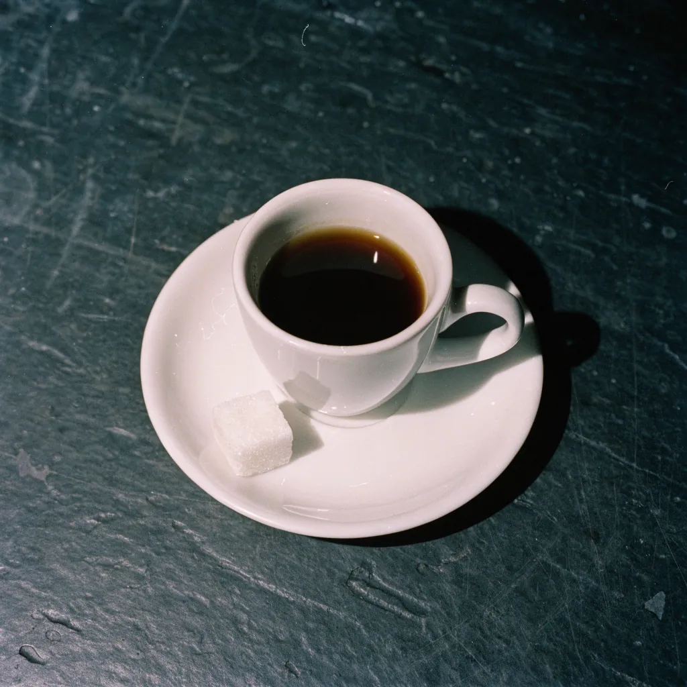
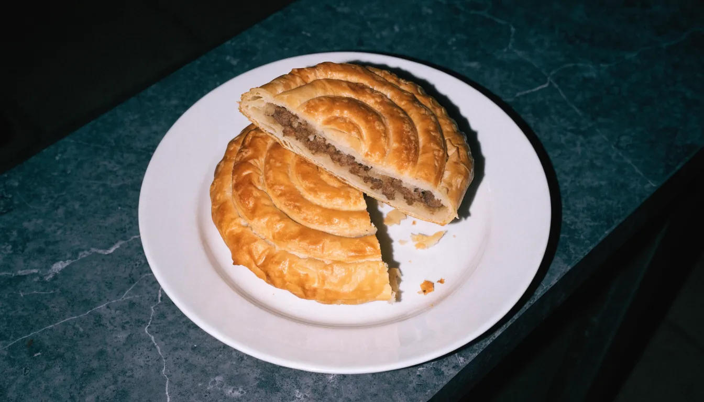
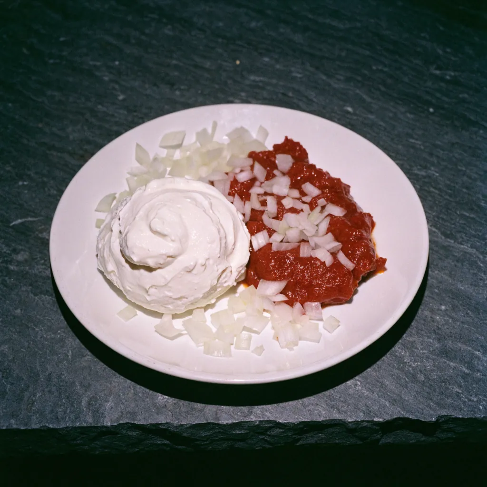
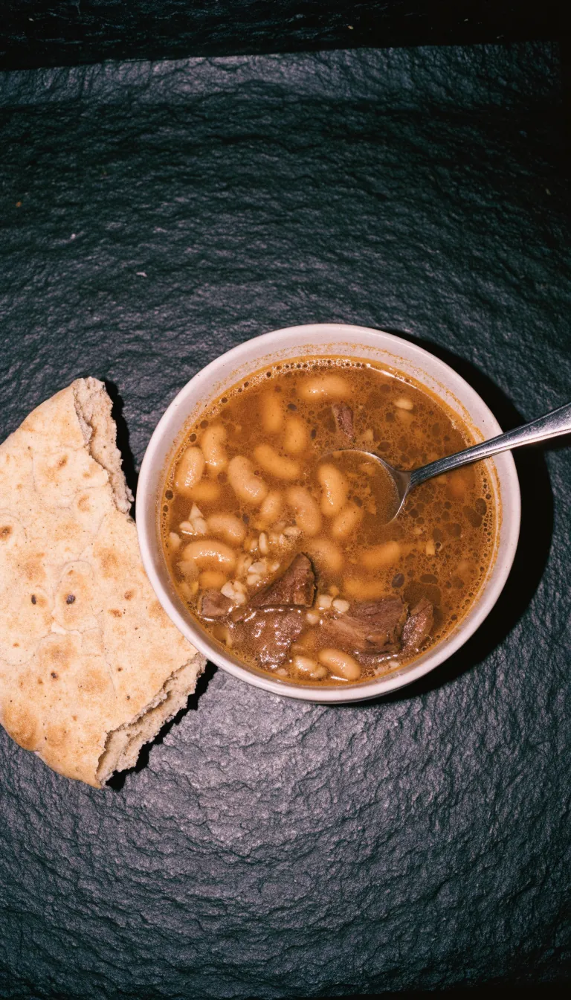

Foto: Marina Paul (Marinas Wassergänse) · Google Maps
Foto: Marina Paul (Marinas Wassergänse) · Google Maps
Ćevapčići & Balkanküche
in Billstedt
Billstedter Hauptstraße 1
22111 Hamburg
täglich 06:30–23:00
040 23954224 anrufenVon 06:30 bis 23:00.
Ab 06:30 ist die Tür auf, um 23:00 geht das Licht im Pavillon aus. Dazwischen: erst Kaffee, dann Mittagstisch, dann Abendessen.

KI-BildSieben Tage die Woche, gleiche Zeiten.
- Montag
- 06:30–23:00
- Dienstag
- 06:30–23:00
- Mittwoch
- 06:30–23:00
- Donnerstag
- 06:30–23:00
- Freitag
- 06:30–23:00
- Samstag
- 06:30–23:00
- Sonntag
- 06:30–23:00
Fünf Teile, ein Teller.
Das Fladenbrot kommt aufgeklappt: Ćevapčići vom Grill, dazu Kajmak, Ajvar und Zwiebeln.


Was auf den Tisch kommt
Ćevapčići
10erVom Grill, am bekanntesten als 10er.
Ćevapčići im Fladenbrot
Mit Kajmak, Ajvar und Zwiebeln.
Bohnensuppe
Mit Fleisch, dazu Brot.
Börek mit Hackfleisch
Blätterteig, gefüllt mit Hack.
Außerdem an der Theke
- Kaffeeab 06:30
- Desserts
- Bier
Vor Ort essen, draußen sitzen oder mitnehmen.
Die ganze Karte hängt im Laden – oder fragen Sie am Telefon: 040 23954224
Börek, Bohnensuppe, Kajmak.
 Foto: Abdulkadir Koç · Google Maps
Foto: Abdulkadir Koç · Google Maps

KI-Bild
KI-Bild Foto: Marina Paul (Marinas Wassergänse) · Google Maps
Foto: Marina Paul (Marinas Wassergänse) · Google Maps

KI-Bild Foto: Sanel Pasagic · Google Maps
Foto: Sanel Pasagic · Google Maps
Die Ecke mit dem gelben Schild
Billstedter Hauptstraße 1, 22111 Hamburg. Das Eckhaus mit dem gelben Rundschild, dem Glaspavillon und den Thujen davor.
- Draußen sitzen: Plätze vor dem Pavillon.
- Reservieren: kurz anrufen, 040 23954224.
- Mitnehmen: geht auch.